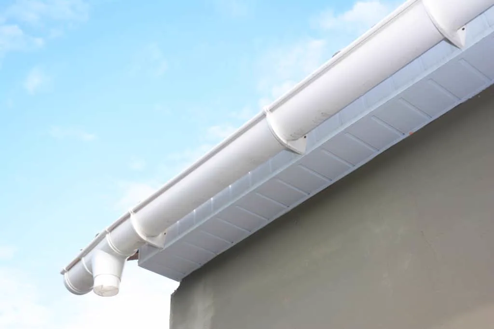
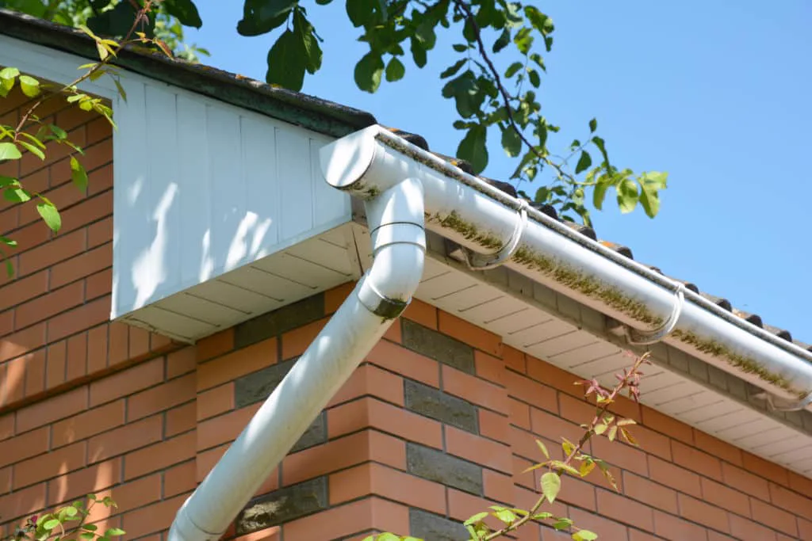
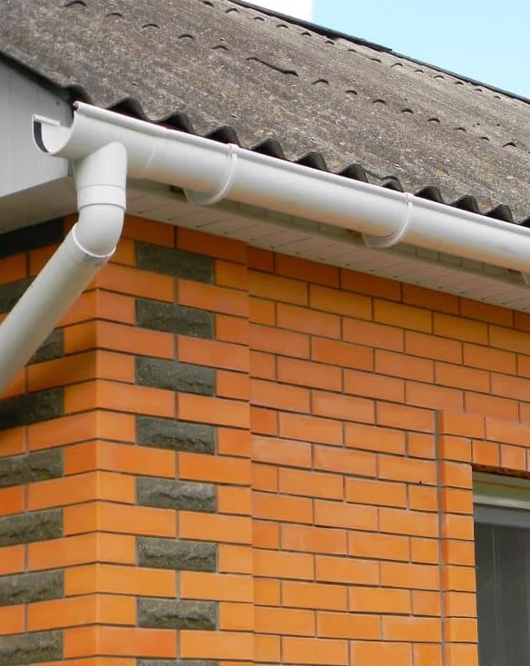
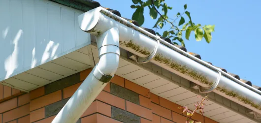

Myth
Gutters only matter in places with frequent storms.
Fact
Every house needs its roof water directed away from the foundation, and on Kenner's flat lots that matters even more.
At Big Easy Gutter, we install, repair and replace gutters for Kenner homes and businesses. Every system is planned for flat, low lots and the heavy rain the area is known for.
We install seamless gutters, repair failing runs and replace systems that can't keep up, across Kenner. On ground this flat, the job isn't finished until the downspouts carry water well away from the house, so we plan every outlet and extension as part of the work.
If your gutters overflow, sag or drop water beside the house, contact us for a free estimate in Kenner.
Because Kenner is low, flat and wet. Much of it is drained former swampland between the Mississippi River and Lake Pontchartrain, and the area averages about 63 inches of rain a year. Water that isn't carried away from the house tends to sit against it.
Much of the northern half of the city was swamp until developers drained and filled it in the late 1950s. That ground is low and flat, so water that lands beside a house tends to stay there.
Kenner sits between the Mississippi River and Lake Pontchartrain. The ground has little natural slope, which makes downspout placement and extensions matter more than usual.
The New Orleans area averages about 63 inches of rain a year. Gutters sized and pitched for that volume are what keep it off your walls and foundation.
Kenner history and geography: Kenner, Louisiana (Wikipedia). Rainfall: NOAA 1991 to 2020 normals for New Orleans, via Current Results.
We handle the full gutter system for Kenner homes and businesses: new installations, repairs, full replacements and leaf guard systems. We work in aluminum, copper, steel, vinyl and zinc, in K-style, half-round, box and fascia profiles, and every estimate is free.

Seamless aluminum, box style and custom gutters, sized and pitched for your roof.
View serviceLeaks, clogs, sagging and corrosion, repaired to extend the life of your gutters.
View service
Old, undersized or failing gutters swapped for a system that keeps up with the rain.
View serviceLeaf guards for homes under trees, so runs stay clear between cleanings.
View service
Overflow in heavy rain, sagging runs, leaking joints and downspouts that empty beside the foundation. On flat lots the last one does the most damage, because the water has nowhere to go.
Clogged or undersized gutters spilling over the front edge in heavy rain.
Loose or widely spaced hangers letting a run pull away from the fascia.
Seams and corners on sectional gutters opening up over time.
Downspouts emptying right beside the house on a flat lot.
Three beliefs lead a lot of homeowners to put off gutter work: that gutters only matter in stormy places, that a yearly cleaning is enough, and that guards end maintenance. None of them holds up, especially on flat, low ground like Kenner's.
Gutters only matter in places with frequent storms.
Every house needs its roof water directed away from the foundation, and on Kenner's flat lots that matters even more.
Cleaning once a year is enough.
Plan on at least twice a year, spring and fall, and more under heavy tree cover.
Gutter guards mean no maintenance.
Guards keep out most debris, but the system still needs an occasional check and cleaning.
Here at Big Easy Gutter, our team assesses your home, looks at where the water is going and gives you a free estimate.
Tell us what's happening with your gutters, or call us at 504-208-2247, Monday to Friday, 8:00 AM to 6:00 PM.
Call us at 504-208-2247 and we will walk you through it.
Request a FREE QuoteYes. We install, repair and replace gutters across Kenner, between the Mississippi River and Lake Pontchartrain, including the neighborhoods north of Airline Highway. We work on homes and businesses, estimates are free, and we assess your home before we recommend anything.
It depends on the length of gutter your home needs, the material and style, the number of stories, the downspouts and extensions, and whether you add a leaf guard system. We give Kenner homeowners a free estimate after assessing the home.
Both. If your system is sound, our repairs address leaks, clogs, sagging and corrosion with quality materials. If the gutters are undersized for your roof or failing in several places, we will talk you through whether a replacement makes more sense.
If trees overhang your roof, usually yes. Clogs are the main reason gutters overflow, and an overflowing gutter on a flat Kenner lot puts water right where it does the most harm. Guards reduce clogs and cleanings, but they don't remove maintenance entirely.
At least 4 feet from the foundation, onto ground that slopes away from the house. Much of Kenner is low, flat former swampland, so longer extensions or a better outlet location can make a real difference. We provide downspout extensions sized to your lot.
At least twice a year, once in spring and again in fall, and more often if trees overhang the roof or after a heavy storm. Clogged gutters overflow fast in a downpour. A leaf guard system can stretch the time between cleanings and cut down on clogs.
Big Easy Gutter transformed my gutter system with its innovative leaf guard system. It has saved me countless hours of cleaning and maintenance. I'm truly impressed with their product and service.
The gutter leaf guard system from Big Easy Gutter is a game changer. It's incredibly effective at keeping my gutters clear, especially during the fall. Their attention to detail in the installation was commendable.
I can't thank them enough for installing my gutter leaf guard system. It's like a shield against leaves and debris. Now I have peace of mind knowing that my gutters are protected.
As a busy homeowner, I needed a solution to prevent clogged gutters. Their team came through with their fantastic leaf guard system. It's been months, and my gutters are still debris-free.
They made my life easier. It's been a relief not having to climb up a ladder to clean gutters. The product works as promised, and I'm thrilled. I highly recommend this company!
They provided excellent service when installing the leaf guard system. The team was professional, and the product exceeded my expectations. No more worrying about gutter blockages.
I was skeptical about leaf guard systems until I experienced one from this company. It's efficient, low-maintenance, and looks great in my home. I highly recommend their services.
I used to dread cleaning my gutters multiple times a year. Thanks to Big Easy Gutter and their leaf guard system, that's a thing of the past. Their solution is effective, and their service is commendable.
